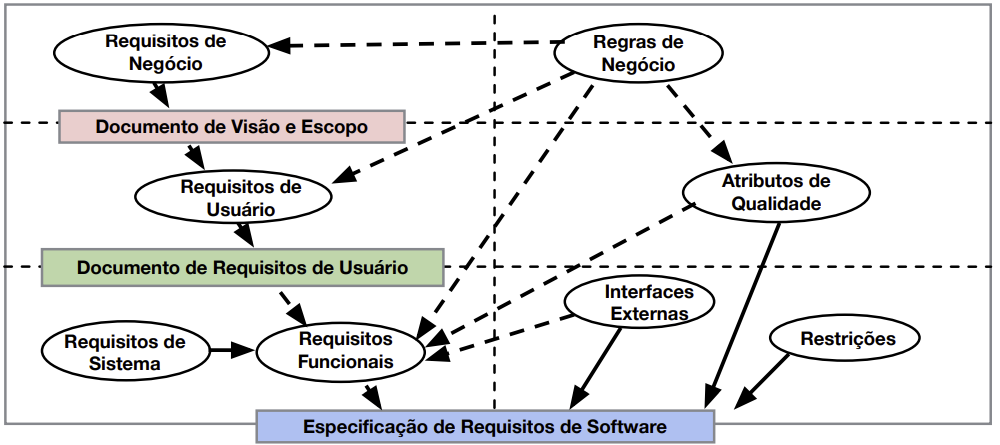

Disciplinas
-
Formação Profissional em Computação Concluído
Materiais
- (Vídeo 1) - [UFMS Digital] Formação Profissional em Computação - Módulo 1 - Unidade 1.
-
Professor ministrante: Luciano Édipo Pereira da Silva
Conteúdo
Proposta de projetos.
Especificação:
- "Os requisitos são uma especificação do que deve ser implementado. São descrições de como o sistema deve se comportar ou de uma propriedade ou atributo do sistema. Eles também podem ser restrição no processo de desenvolvimento do sistema." (Ian Sommerville e Peter Sawyer, 1997).
Alguns tipos de informações de requisitos:
| Termo | Definição |
|---|---|
| Requisito de negócio | Um objetivo de negócio de alto nível da organização que cria um produto ou de um cliente que o adquire. (porque implementar o software/sistema) |
| Regra de negócio | Uma política, diretriz, norma ou regulamento que define ou restringe algum aspecto do negócio. Não é um requisito de software em si, mas pode originar vários tipos de requisitos de software. |
| Restrição | Uma restrição imposta às opções disponíveis ao desenvolvedor para o projeto e construção de um produto. (requisito não funcional) |
| Requisito de interface externa | Uma descrição de uma conexão entre um sistema de software e um usuário, outro sistema de software ou um dispositivo de hardware. (requisito não-funcional) |
| Característica ("Feature") | Um ou mais recursos do sistema que fornecem valor para um usuário e são descritos por um conjunto de requisitos funcionais. |
Outros tipos de informações de requisitos:
| Termo | Definição |
|---|---|
| Requisito funcional | Uma descrição de um comportamento que um sistema exibirá em condições específicas. (o que o desenvolvedor deve implementar) |
| Requisito não-funcional | Uma descrição de uma propriedade ou característica que um sistema deve exibir ou uma restrição que deve respeitar. |
| Atributo de qualidade | Um tipo de requisito não funcional que descreve um serviço ou característica de desempenho de um produto. |
| Requisito de sistema | Um requisito de nível superior para um produto que contém vários subsistemas, que podem ser todos software ou software e hardware. |
| Requisito de usuário | Um objetivo ou tarefa que classes específicas de usuários devem ser capazes de executar com um sistema ou um atributo de produto desejado. (o que o usuário será capaz de fazer com o software/sistema) |
Requisitos de Produto x Requisitos de Projeto:
- Os projetos têm outras expectativas e entregas que não fazem parte do software.
- Estes são requisitos do projeto, mas não os requisitos do produto.
- Exemplo:
- Treinamento de uso do sistema
- Documentação para o usuário
- Procedimentos para transição de sistemas, etc.
Riscos mais comuns relativos à atividade de requisitos:
- Envolvimento do usuário insuficiente
- Planejamento impreciso
- Requisitos de usuário que mudam
- Requisitos ambíguos
Requisitos ruins:
- A principal consequência dos problemas de requisitos é o retrabalho (fazer novamente algo que você pensou que já estava feito).
- O retrabalho geralmente consome 30% a 50% por cento do custo total de desenvolvimento e os erros de requisitos podem representar entre 70% e 85% do custo de retrabalho.
- Criar requisitos melhores é um investimento, não apenas um custo.
Níveis e Tipos de Requisitos:
"Overloading QA" by drewgstephens is licensed under CC BY-SA 2.0.
Níveis de Requisitos de Software:
- Requisitos de negócio
- Requisitos de usuário
- Requisitos funcionais
Tipos de Requisitos:
- Requisito de negócio
- Requisito de usuário
- Requisito funcional
- Requisito não funcional
- Atributo de qualidade
- Restrição
- Interface externa
Níveis de Requisitos de Software e seus relacionamentos:
Requisitos de Negócio
Descrevem o porquê da organização está implementando/adquirindo o sistema.
Foca nos objetivos de negócio da organização que serão apoiados pelo software.
- Reduzir custos em 20%
- Reduzir tempo em 10%
- Aumentar quantidade de clientes em 25%
Exemplo de Produto resultante: Documento de Visão e Escopo
Requisitos de Usuário
Descrevem as tarefas que os usuários devem realizar no sistema. Ou seja, o que os usuários poderão fazer no sistema.
Formas de representar:
- Casos de uso. Ex: Fazer check-in
- Histórias de usuário. Ex: “Como passageiro, eu quero fazer o check-in de um voo para permitir meu embarque”
Exemplo de Produto resultante: Documento de Requisitos de Usuário
Requisitos Funcionais
Especificam o comportamento do sistema em determinadas condições. Descrevem o que os desenvolvedores devem implementar para que usuários realizem suas tarefas.
- O passageiro deve ser capaz de imprimir as passagens para todos os voos que ele fez check-in.
- Se o perfil do passageiro não indicar um assento marcado, o sistema de reserva deve atribuir um assento.
Exemplo de Produto resultante: Especificação de Requisitos de Software
Requisitos de Sistema
Descreve os requisitos para um produto que é composto de múltiplos componentes ou subsistemas. Um “sistema” nesse caso, pode incluir subsistemas de software e hardware, pessoas e processos.
Exemplo: caixa de supermercado
- Possui leitor de código de barras, gaveta de dinheiro, leitor de cartão, impressora fiscal.
O analista deve alocar funcionalidades para componentes e entender suas interfaces
Regras de Negócio
Incluem políticas da organização, regulamentos do governo, padrões da indústria e algoritmos. Não são requisitos de software pois existem independente de qualquer software específico. Influenciam requisitos de negócio, de usuário e funcionais, além de atributos de qualidade.
Exemplo de Regras de Negócio
- O cliente do banco pode sacar, no máximo, R$1000,00 por dia de sua conta.
- Funcionário tem direito a 30 dias de férias após 1 ano de trabalho.
- O professor deve lançar a nota da prova em até 10 dias úteis.
Requisitos Não Funcionais
Uma propriedade ou característica que um sistema deve ter ou uma restrição que deve respeitar. Atributos de qualidade descrevem as características do sistema em várias dimensões, que são importantes para usuários e desenvolvedores.
Exemplos incluem usabilidade, segurança, desempenho, portabilidade, compatibilidade, disponibilidade, interfaces externas e restrições de design e implementação.
Engenharia de Requisitos
É o processo de encontrar, analisar, documentar, verificar, validar e gerenciar requisitos e restrições.
Fases da Engenharia de Requisitos
Desenvolvimento de Requisitos
- Elicitação: explora os requisitos
- Análise: avalia os requisitos
- Especificação: documenta os requisitos
- Validação: confirma os requisitos
Gerenciamento de Requisitos: define acordo, avaliar impacto de mudanças, rastreia requisitos, controla status…
Desenvolvimento: Elicitação
Atividades relacionadas à descoberta de requisitos: entrevistas, workshops, análise de documentos, prototipagem, etc
Principais atividades:
- Identificar classes de usuários e outros stakeholders
- Entender os objetivos de negócio e tarefas dos usuários
- Aprender sobre o ambiente onde o novo produto será utilizado
- Trabalhar com membros de cada classe de usuário para entender suas necessidades e expectativas
Desenvolvimento: Análise
Busca um entendimento mais preciso dos requisitos
Principais atividades:
- Analisar a informação recebida do usuário para diferenciar os diversos tipos de requisitos
- Decompor requisitos de alto-nível
- Derivar requisitos funcionais
- Entender os atributos de qualidade
- Alocar requisitos para componentes
- Negociar prioridades
Desenvolvimento: Especificação
Representa e armazena o conhecimento sobre os requisitos de modo persistente e organizado
Principal atividade: traduzir as necessidades dos usuários em requisitos escritos e diagramas
Desenvolvimento: Validação
Confirma que requisitos estão corretos e permitirão a construção de uma solução para satisfazer os objetivos de negócio
Principais atividades:
- Revisar a documentação de requisitos para corrigir problemas antes que o desenvolvimento inicie
- Desenvolver testes e critérios de aceitação para confirmar que o produto satisfaz as necessidades dos usuários e objetivos de negócio
Gerenciamento de Requisitos
Principais atividades:
- Definir a baseline dos requisitos (ponto que representa acordo entre stakeholders para release ou iteração)
- Avaliar o impacto de mudanças de requisitos
- Definir os relacionamentos e dependências
- Rastrear requisitos
- Controlar o status e mudanças dos requisitos
Benefícios da Engenharia de Requisitos
- Os processos de requisitos enfatizam uma abordagem colaborativa do desenvolvimento de produtos.
- Um processo efetivo de mudanças minimiza o impacto de alterações nos requisitos.
- Requisitos documentados e claros facilitam os testes.
Consequências:
- Menos defeitos nos requisitos e no produto
- Menos retrabalho
- Desenvolvimento mais rápido
- Menos funcionalidades desnecessárias
- Menos erros de comunicação
- Maior satisfação do cliente e do time de desenvolvimento
- Produtos fazem o esperado
Referências
- SOMMERVILLE, Ian; SAWYER, Pete. Requirements engineering: a good practice guide. 1997. England: John Willey & Son Ltd.
- WIEGERS, K. E.; BEATTY, J. Software Requirements. 3. Ed. Microsoft Press, 2013.
Licenciamento
Respeitadas as formas de citação formal de autores de acordo com as normas da ABNT NBR 6023 (2018), a não ser que esteja indicado de outra forma, todo material desta apresentação está licenciado sob uma Licença Creative Commons - Atribuição 4.0 Internacional.